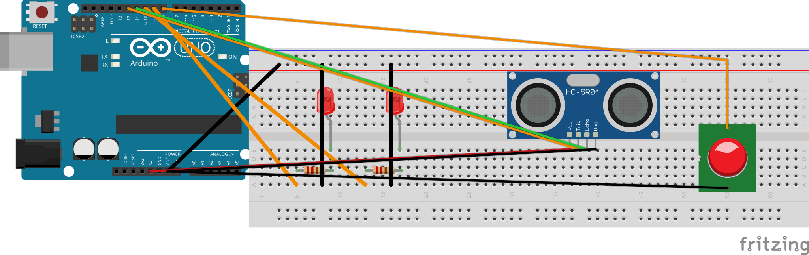

מעצבים אזעקת קרבה משלכם — כזו שעושה עבודה אמיתית. בוחרים מה היא שומרת, מחליטים כמה קרוב זה "קרוב מדי" ובונים אותה.
מתכננים, בונים ומראים.
איזו אזעקה בונים? מקיפים אחת:
אזעקת מגירה — מצפצפת כשהמגירה נפתחת.
התרעת דלת — מתריעה כשמישהו נכנס בפתח.
קערת חיית מחמד — מתריעה כשמשהו מתקרב לקערה.
רעיון משלכם — כל דבר אחר שרוצים לשמור עליו. אם זה רעיון יוצא דופן, שואלים את המורה לפני שמתחילים.
כמה שיותר מדויק. לדוגמה: "המגירה העליונה בשולחן, שבה אני שומר את הדברים החשובים שלי" או "הפתח של החדר, כדי לדעת מתי מישהו נכנס".
בוחרים מרחק שמתאים למקום ששומרים: סף קטן (כ-5 ס"מ) לעצם בודד ממש צמוד, סף בינוני (כ-20 ס"מ) ל"אל תיגעו בדברים שלי", או סף גדול (כ-50 ס"מ) לאזור רחב כמו פתח דלת. את המספר המדויק מכוונים אחר כך בשלב הבדיקה.
בוחרים: הלד מאיר, הזמזם מצפצף, או שניהם. אפשר גם להחליט אם זה קבוע (דולק כל עוד העצם קרוב) או מהבהב/מצפצף לסירוגין. משתמשים בלד ובזמזם שכבר על הברדבורד.
אפשר להוסיף לד צהוב "מתקרב" על חיבור דיגיטלי 10 של הארדואינו, שמאיר לפני הלד האדום של האזעקה. כך מקבלים שני אזורים: כשמתקרבים — הצהוב מאיר כאזהרה; כשמתקרבים יותר מדי — האדום והזמזם מגיבים. מציירים את שני האזורים על נייר לפני שבונים.
מציירים את החיווט על נייר, אחר כך מחווטים אותו על הברדבורד.
מחווטים את אזעקת הקרבה המלאה שכבר מכירים: חיישן המרחק (VCC ל-5V, GND ל-GND, Trig לחיבור דיגיטלי 12 של הארדואינו, Echo לחיבור דיגיטלי 11), הלד על חיבור דיגיטלי 9 דרך נגד 220Ω (פסים: אדום · אדום · חום) והזמזם על חיבור דיגיטלי 8. רגלי החיישן ורגלי הלד נכנסות לטורים שונים. אפשר להיעזר במעגל 4 שבכרטיסיית החיווט R1 (w_p3_04_two_stage).
רק אם בחרתם אזעקה בשני שלבים: מוסיפים לד צהוב שני על חיבור דיגיטלי 10 של הארדואינו, עם נגד 220Ω משלו — בדיוק כמו הלד האדום, רק על חיבור דיגיטלי 10. אם דילגתם על אזעקה בשני שלבים — מתעלמים מהשורה הזו ומהלד הצהוב בתרשים.
HC-SR04 Arduino VCC ─────────── 5V Trig ─────────── pin 12 Echo ─────────── pin 11 GND ─────────── GND LED (red, alarm) pin 9 (via 220Ω) , GND LED (yellow, warn) pin 10 (via 220Ω) , GND ← two-stage only Buzzer pin 8 , GND

מצלמים תמונה של החיווט הגמור.
מבקשים מקלוד קוד לתכנת - מתארים מה בונים וקלוד עוזר לכתוב. משפרים יחד עם קלוד קוד עד שזה עובד. משתמשים במה שכתבתם בשלב 1 כדי לתאר לקלוד קוד מה רוצים.
מתארים מה רוצים שהאזעקה תעשה ומה הסף. דוגמה לרעיון מתקדם: אזעקת מגירה שמצפצפת רק כשהמגירה נפתחת ולא כל הזמן שמשהו קרוב. לדוגמה: "אני בונה אזעקת מגירה עם חיישן מרחק, לד וזמזם — החיווט כבר מוכן. החיישן בתוך המגירה ואני רוצה שהזמזם יצפצף רק ברגע שהמגירה נפתחת — כלומר ברגע שהמרחק קופץ מקרוב לרחוק — ולא כל הזמן שמשהו קרוב לחיישן. תכנן איתי את הקוד תוך כדי שיחה כדי לוודא שאני מבין כל שלב ואז כתוב אותו". אזעקה בשני שלבים (הלד הצהוב מהשלב הקודם) היא רעיון מתקדם נוסף שאפשר לבקש מקלוד קוד לתכנת — הקוד בלבד, החיווט כבר מתואר למעלה.
מעלים את הקוד לארדואינו ובודקים. אם זה לא עובד כמו שרצינו, חוזרים לקלוד קוד עם (א), (ב) ו-(ג) חדשים.
מנסים את האזעקה בדיוק במקום שהיא אמורה לשמור עליו — פותחים את המגירה האמיתית, עומדים בפתח האמיתי, מקרבים יד לקערה. אם משהו שונה ממה שתכננתם, כותבים מה, חוזרים לקלוד קוד ומשפרים. התוכנית יכולה להשתנות תוך כדי — זה בסדר גמור.
אם האזעקה נדלקת מוקדם מדי — מקטינים את הסף; אם מאוחר מדי — מגדילים אותו. מכוונים את המספר עד שהאזעקה נכנסת לפעולה בדיוק במרחק שרציתם. מספר מרחק גדול (למשל 999) כשאין כלום מול החיישן הוא תקין, לא תקלה — החיישן פשוט לא שמע הד שחזר.
כשאתם מרוצים (או כשמחליטים שזה מספיק טוב להיום), קוראים למורה.
מראים את האזעקה עושה את העבודה שלה — ועדיף להפעיל אותה במקום האמיתי, מול המורה או מול חבר. מסבירים במשפט או שניים מה היא שומרת ולמה בניתם אותה ככה.
אם רוצים, אפשר לצלם תמונה של האזעקה הגמורה ולשמור אותה בתיקיית פרויקט 3 שלכם ב-Google Drive, לתיק העבודות בבית.
עיצבתם, בניתם ותכנתתם אזעקת קרבה משלכם — כזו שעושה עבודה אמיתית — מאפס.